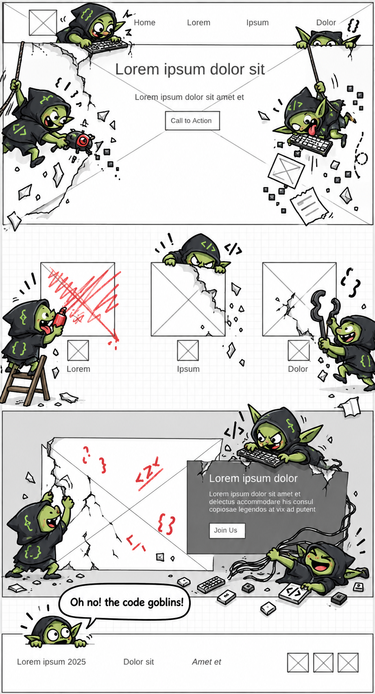

Overview
Purpose
To show people how totally awesome Rafting in dangerous water is! You won't die! We will show you people having fun and dates to pick from! Then we take your money and hope you don't die!
Audience
People addicted to the thrill of adrenaline and the brush of death. Come and find the most exciting and wet experience of your lives!
DISCLAIMER: All images on this website have been created with ChatGPT.
Branding
Website Logo

Style Guide
Color Palette
| Primary | Secondary | Accent 1 | Accent 2 |
|---|---|---|---|
Typography
Heading Font: Courier New
Paragraph Font: Georgia
Normal Paragraph Pxample
We're gonna give you the best kind of rafting, life and death will hang in the balance. We hope you don't die, but regardless you will sign a wavier that you promise not to haunt us if you do die in our river.
#scared of ghosts
Colored Paragraph Example
We love to shove more people than can fit at one time! It saves on labor costs and we get more money! Maybe some people say its less fun. But we sure don't care! Just make sure not to get stuck underwater. There is no way we can get in and help you at that point. R.I.P.
Navigation with Hover
Site Map
Wireframes
Home
